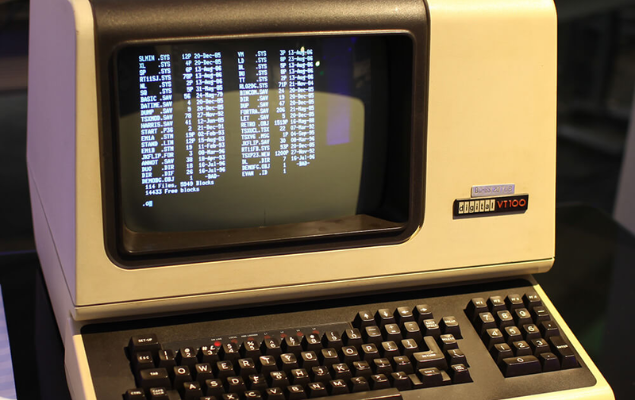

Linux Para que serve?

linux, o sistema com mais de mil distribuições, porem ele é bom? ou é um sistema esquecido pela minoria? é isso que vamos falar hoje.

primeira versão do linux em 1991
O linux é um kernel que foi criado em 1991 é foi uma evolução no rumo de programação, e o aumento dos hackers pelo mundo todo, mas ele é bom no dia a dia? no dia a dia ele tem um suporte de alguns executaveis como o telegram, whatsapp, adobe (todos os executaveis da adobe), Jogos e etc. Porem no dia a dia tem uns executaveis que não iram funcionar como o word, powerpoint, exel, onenote, ou ate Jogos como Roblox, kogama, e alguns jogos VR na Steam, entetando ate que é bom no dia a dia como acessar o google, as lojas do linux ou ate passar um tempo jogando, Mas existe alternativas de launcher de trabalhos ou de jogos? a alternativa do Microsoft é o libreoffice que é uma altenativa de algums apps da microsoft, e os jogos tem algumas launcher alternativas? Minecraft pode ser o launcher oficial ou ate os piratas como Tlaucher, shiginima launcher (esses sao os que eu testei) ou ate com o Roblox que tem uma alternativa chamada grapejuice(não funciona mais) quer usava o wine para executar o roblox ou a steam que tem sua launcher oficial.